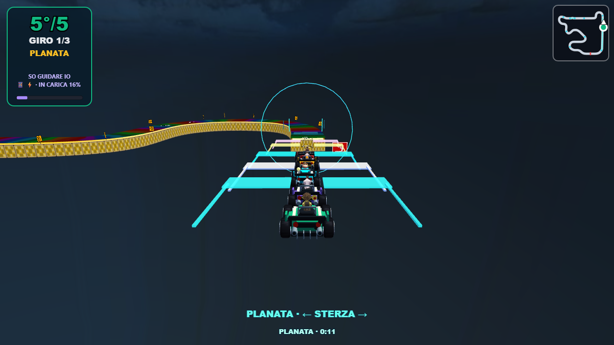
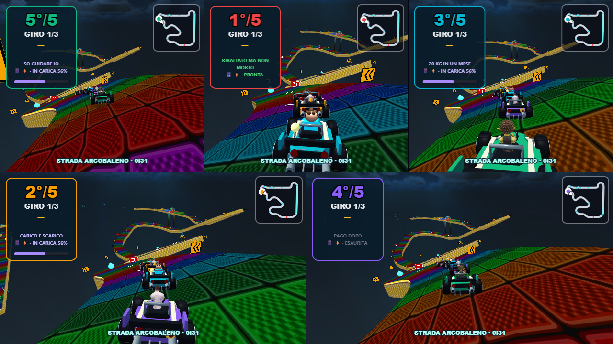
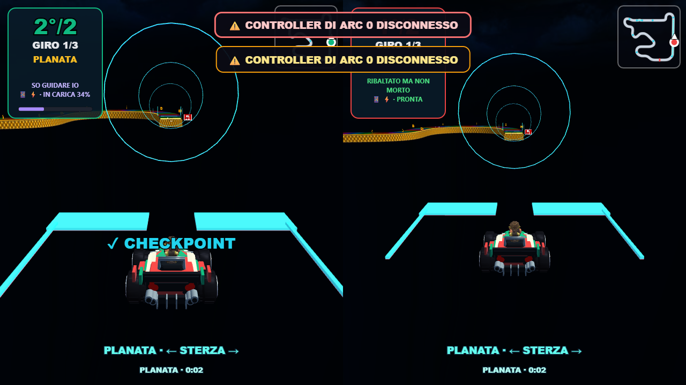
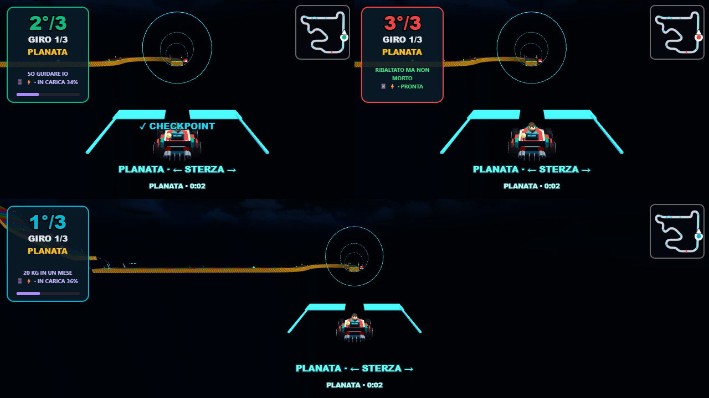
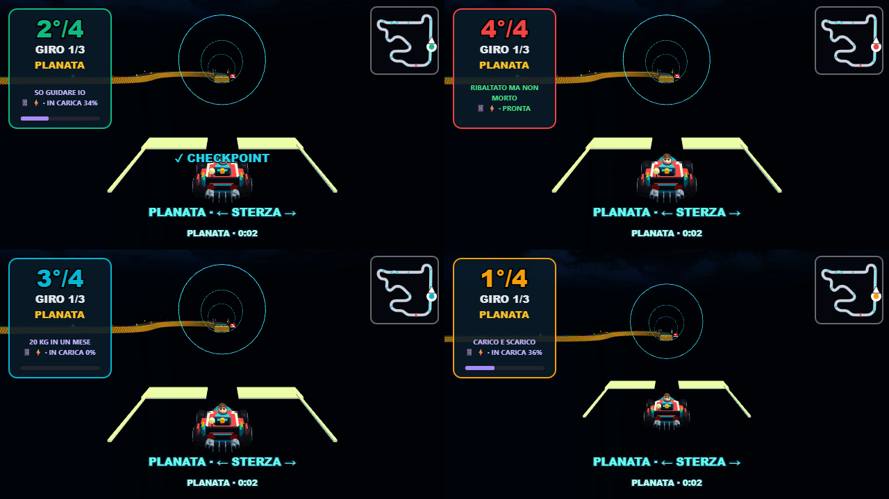
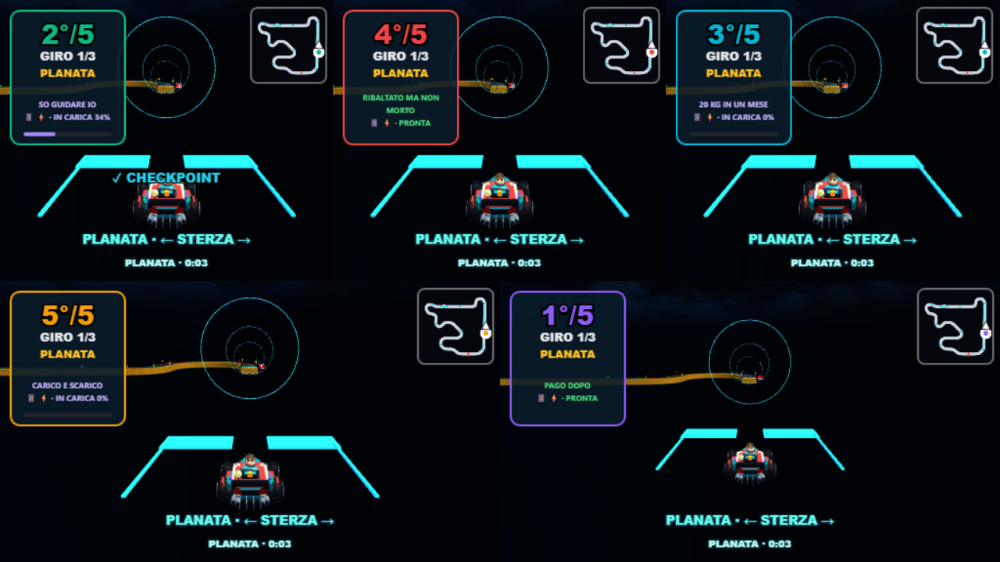
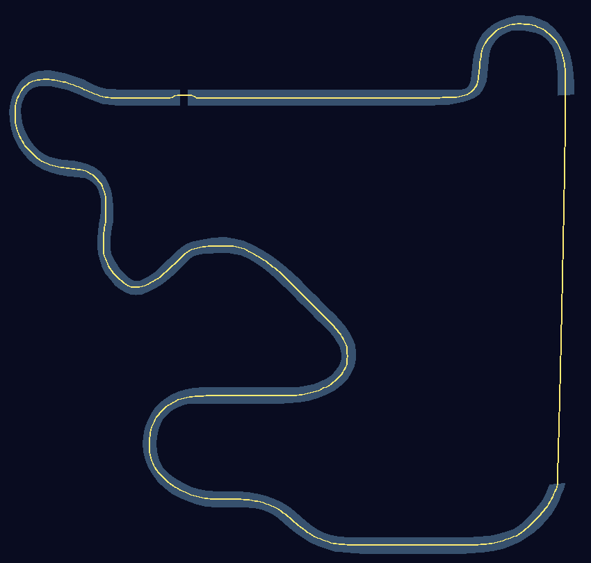

RIBALTATI · NUOVA PISTA
Strada Arcobaleno
Tre giri sulla pista sospesa del GLB, due passaggi in planata e recupero al checkpoint. Nel catalogo, da «IL RULLO DECIDE», premi una volta ← per scegliere Arcobaleno.
Apri il gioco locale · Report tecnico e test
Campione finale HIGH,1280×720,RTX3050,cinque visuali: 57.9 FPS. Litorale nello stesso protocollo: 50.8 FPS. Sono campioni da8secondi, non una garanzia per ogni PC o tutta la gara.

Planata sul vuoto e piattaforma di arrivo
Curve e dislivelli del modello
Due giocatori
Tre giocatori
Quattro giocatori
Cinque giocatori
Traiettoria ricostruita sulla superficieGara browser: cinque client pilotati dall’AI, tre giri completati,30decolli e30atterraggi. Telefoni e gamepad fisici richiedono una prova manuale. Modello originale: RyanNotHere, GBA Rainbow Road, CC BY4.0; dettagli nel report.